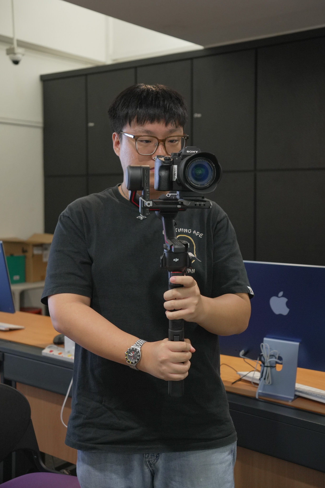

Hello, I am Nicolas! I am an 18-year-old, self-taught photographer and graphic designer currently studying a Diploma in Media, Arts & Design (Story & Content Creation) at Singapore Polytechnic.
What initially started out as a small hobby eventually turned into one of my favorite pastimes, and I have developed a strong passion for capturing small moments and telling stories through photos.
I have worked on documentaries and short films, and taken on clients as a freelance photographer. I have always enjoyed looking at photos, and am especially happy when a nice photo of me with my friends is taken. Through my lens, I aim to deliver that same happiness to whoever I take photos for.
I am always open to new experiences and challenges, so if you are looking for an enthusiastic, friendly photographer, do get in touch and let's work together!